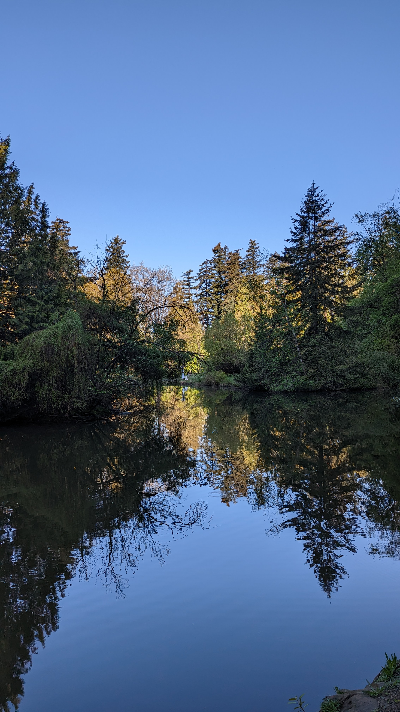

field recordings
still in the forest....
we got a new flute
Sorry, your browser doesn't support html5!
recording 67 (distress @ 0:58)
recording 66 (tweety @ 1:30)
recording 65 (morning birds)
recording 64 (writing space)
recording 63 (back to the forest)
recording 62 (prairie birds)
recording 61 (prairie birds)
recording 60 (prairie interlude)
recording 59 (prairie interlude)
recording 58 (solstice morning sirens)
recording 57 (call and response)
recording 56 (graffiti heaven ambient)
recording 55 (crow @ 0:10)
recording 54 (by the bandstand)
recording 53 (plane @ 2:30)
recording 52 (even more morning birds)
recording 51 (more morning birds)
recording 50 (morning birds)
recording 49 (plane @ 0:30)
recording 48 (prairie birds)
recording 47 (ctrain @ 1:35)
recording 46 (solo @ 0:26)
recording 45 (still in the forest)
recording 44 (seagulls and crows at the skatepark)
recording 43(siren @ 0:52)
recording 42 (back in the forest)
recording 41 (murder of crows)
recording 40 (rooster @ 0:15)
recording 39 (6am in Kilifi)
recording 38 (still live from the motherland)
recording 37 (live from the motherland)
recording 36b (call and response)
recording 36 (starts at water)
recording 35 (plane @ 1:15)
recording 34 (birds by the water)
recording 33 (mallard @ 0:38)
recording 32 (message from the recorder)
recording 31 (playing birds)
recording 30 (snowsteps but in -40C)
recording 29 (snowsteps)
recording 28 (cityscapes)
recording 27 (train @ 0:35)
recording 26 (water feature)
recording 25 (mallard @ 0:11)
recording 24 (murder of crows following)
recording 23 (pedestian energy)
recording 22 (crow calling its squad @ 0:16)
recording 21
recording 20
recording 19
recording 18 (squirrels running down tree @ 0:33)
recording 17
recording 16
recording 15
recording 14
recording 13
recording 12
recording 11
recording 10
recording 9
recording 8
recording 7
recording 6
recording 5
recording 4
recording 3
recording 2
recording 1
recorded by BUSHSK8R
download for use
